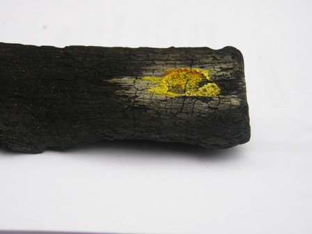
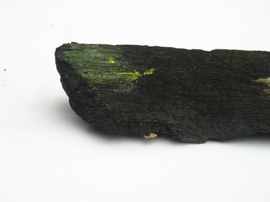
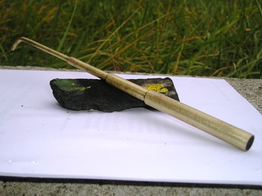

Ho ritrovato il mio vecchio cannello ferruminatorio di quand'ero studente.
Sapevo di averlo da qualche parte e insistendo son riuscito a scovarlo fra dimenticate cianfrusaglie.
Ora il cannellino si merita, come promesso, una bella foto in primo piano, anzi un articoletto tutto per lui.

Prima di tutto, quando si rientra nella civiltà dopo lunghi viaggi in paesi remoti, occorre un bel bagno ristoratore; nel suo caso c'è voluto non un bagno ristoratore ma uno "restauratore", a base di... cartavetrata.
Era tutto ossidato, ora guarda che bell'ottone è riemerso! Ottone doc degli anni d'oro.
(Quando la plastica, questa opportunista che ormai ha vinto tutte le battaglie contro tutti, era ritenuta -seppure col moplen fresco di invenzione- vile, vilissimo materiale, come in definitiva si meriterebbe, la schifosa.
Ma cosa faremmo senza la plastica? Un'automobile di metallo?).
Anche il Figliol prodigo quando è ritornato a casa ha avuto il suo momento di gloria... non vogliamo forse celebrare come si deve questo ambìto ritorno del mio cannello presso di me?
Subito! Apparecchiamo la tavola per far festa e mettiamolo alla prova!
Per continuar la metafora, io non avevo il vitello grasso da ammazzare in suo onore (il bel parallelepipedo di carbone di tiglio) e mi son dovuto accontentare di un bovinello magro e scalcagnato (un carbone del barbecue, sigh!) ma basta il pensiero, no?
Per il pranzo ho deciso di fargli assaggiare tre portate abbastanza buone per lui, che ha dei gusti assai poco umani: il cadmio, il cromo ed il piombo.
Gli altri cationici piatti li assaggerà magari con calma, in seguito.
Ora non sto a riassumere tutta la procedura, che ho già descritta l'altra volta, ma testimonio solo i risultati con qualche foto.
Il cadmio (si trattava di solfuro) ha prodotto quel residuo giallo (ne ho messo un po' troppo, tutta colpa mia per la foga del momento) ma comunque ha formato quell'alone bruno-aranciato caratteristico e inconfondibile di CdO.

Il cromo (K2Cr2O7) ha prodotto una macchia verde diffusa di ossido Cr2O3; naturalmente dal vivo il verde su fondo nero si vede molto meglio.

Il nitrato di piombo Pb(NO3)2 è stato ridotto al suo bravo globuletto metallico, ma come il solito questo era talmente piccolo che è stato impossibile fotografarlo, quindi credetemi sulla parola.

Ora il cannello non scapperà più dal mio lab; lavorerà poco, questo è sicuro, ma avrà il suo posticino d'onore nel cassetto delle cose piccole, starà finalmente in buona compagnia fra burette, pipette, piastrine di porcellana, rotolini per il pH, capsuline, ecc.
Bentornato fra i tuoi amici, cannello!